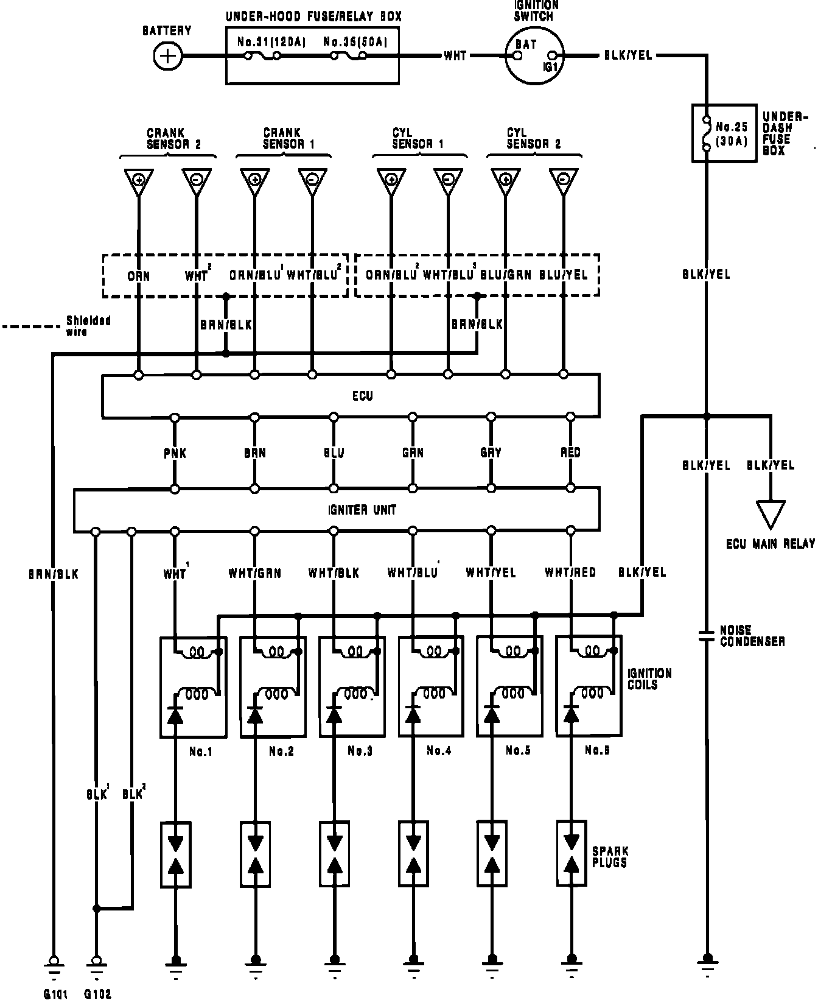

Operation CHARM
: Car repair manuals for everyone.
Home
>>
Acura
>>
1992
>>
Legend Sedan V6-3206cc 3.2L SOHC FI
>>
Repair and Diagnosis
>>
Diagrams
>>
Electrical Diagrams
>>
Ignition System
>>
Ignition System Diagrams
Ignition System Diagrams
Ignition Circuit Diagram:

NOTE
:
Several different wires have the same color. They have been given a number suffix to distinguish them (for example WHT 1 and WHT 2 are not the same).